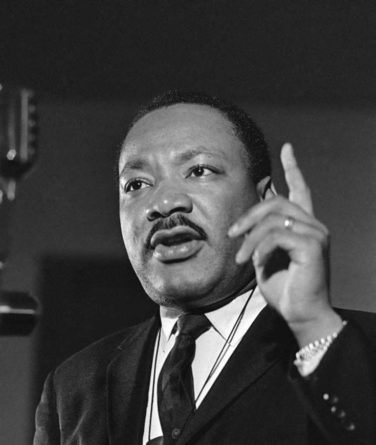
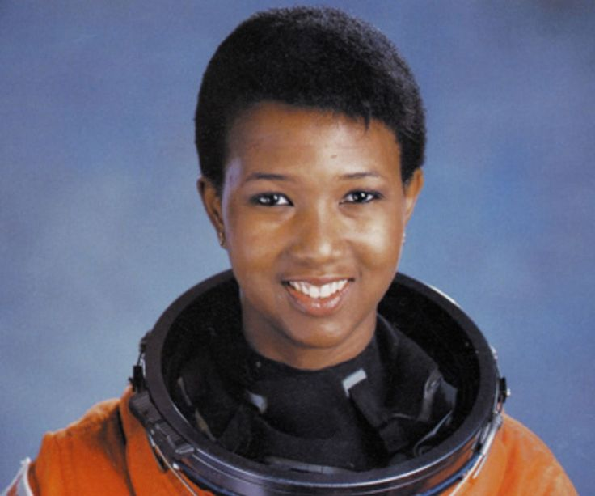
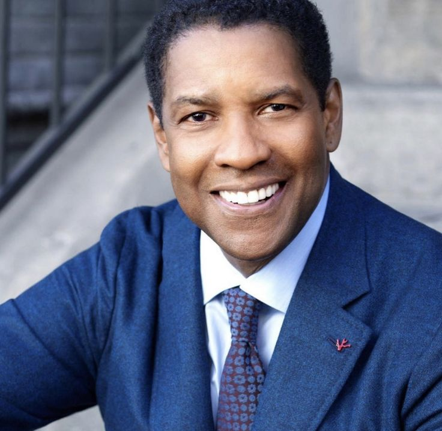
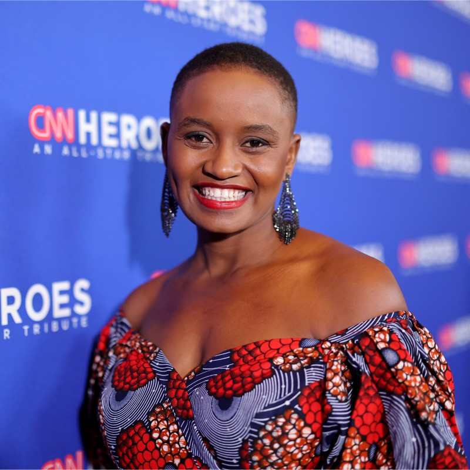

Elon Musk
Entrepreneur, CEO, Inventor
Elon Musk is a modern-day visionary, an individual who has captivated the world with his innovative ideas and unwavering determination.
“ I admire Elon Musk for many reasons. He is a visionary entrepreneur who has made significant contributions to the fields of space exploration, sustainable transportation, and artificial intelligence. He is also a risk-taker who is not afraid to challenge the status quo.
One of the things I admire most about Musk is his ambitious goals. He is always looking to the future and thinking about how to solve some of the world's biggest problems.”

Martin Luther King Jr.
Civil Rights Leader
He is a figure who has left an indelible mark on history and his legacy continues to inspire countless individuals.
“ One of the things I admire most about King was his commitment to nonviolence. Even though he faced violence and hatred on a daily basis, he never wavered from his belief that nonviolence was the only way to achieve lasting change. He was a true pacifist who believed that love is more powerful than hate. ”

Mae Carol Jemison
Engineer, Physician, former NASA Astronaut
She is an extraordinary woman who shattered barriers and reached for the stars
“ I also admire Jemison's courage. She was the first African-American woman to travel in space, and she faced many challenges along the way. She was told that she couldn't be an astronaut because she was a woman and because she was black. But she never gave up on her dream. She worked hard and proved to everyone that she was qualified for the job.”

Denzel Hayes Washington Jr
Actor, Producer and Director
He is a talented actor, a successful director, and a dedicated philanthropist. He is also a role model for African Americans and people of all backgrounds.
“ One of the things I admire most about Washington is his versatility as an actor. He has played a wide range of characters, from historical figures like Malcolm X and Marcus Garvey to fictional characters like Training Day's Alonzo Harris and Fences' Troy Maxson. He is able to bring authenticity and depth to every role he plays.I also admire Washington's commitment to his craft. He is a perfectionist who is always striving to improve. He is also known for being very generous with his time and knowledge. He is always willing to help other actors and filmmakers. ”

Nelly Cheboi
CEO & Founder TechLit Africa
She is a brilliant software engineer who has used her skills to make a difference in the world.
“ One of the things I admire most about Nelly is her determination and resilience. She grew up in a rural village in Kenya and faced many challenges, but she never gave up on her dream of getting an education and making a difference in her community. She is also a role model for young women in Africa, showing them that they can achieve anything they set their minds to ”